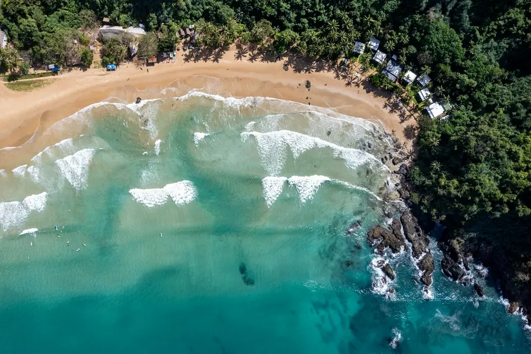
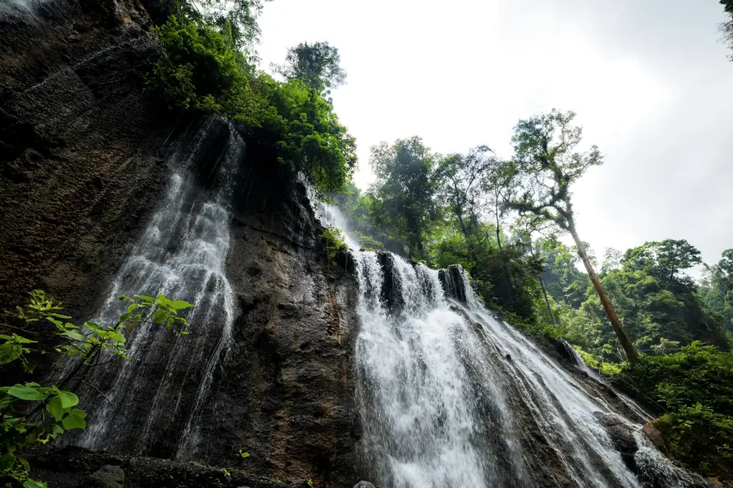
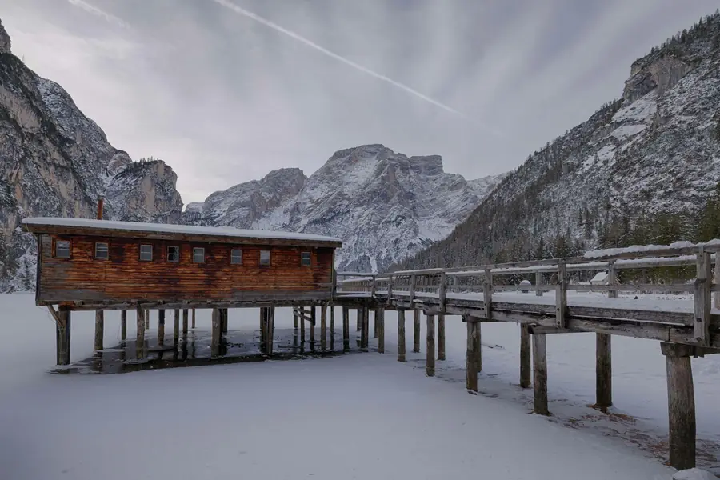

Galleria 3D rotante
Otto immagini su un anello in prospettiva. Si sfoglia con i pulsanti, con le frecce della tastiera o trascinando; da sola avanza finché la metti in pausa.







Spiaggia turchese
Otto immagini su un anello in prospettiva. Si sfoglia con i pulsanti, con le frecce della tastiera o trascinando; da sola avanza finché la metti in pausa.



Spiaggia turchese